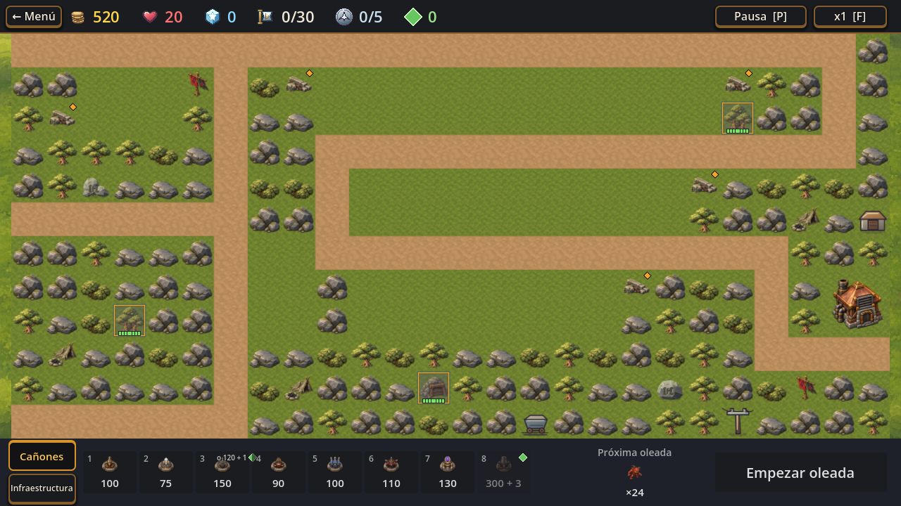
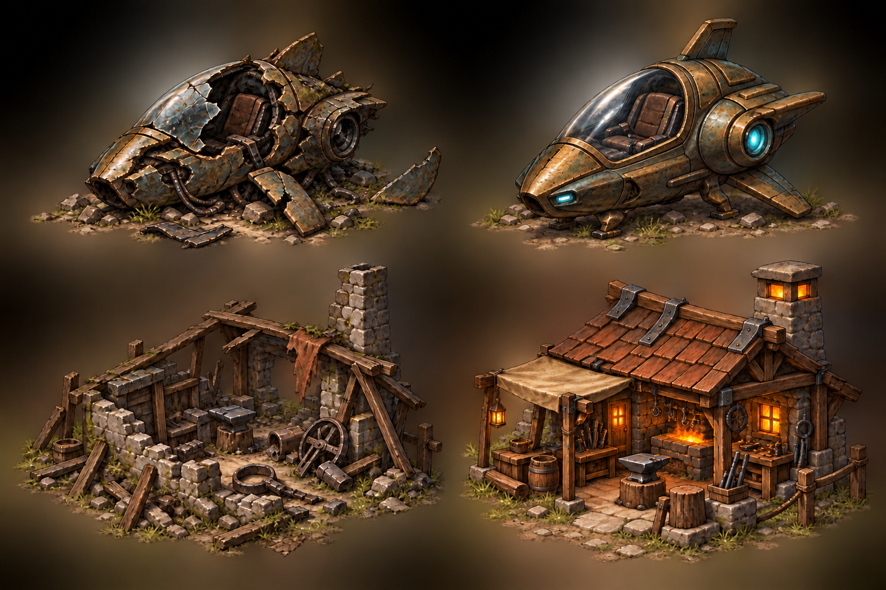
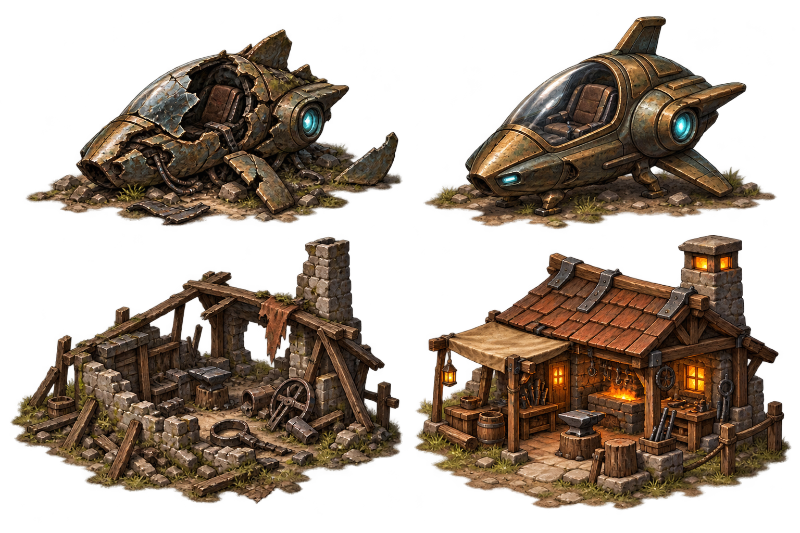

La captura muestra los tres SVG activos del nivel 15. No faltan reemplazos de M79: estas piezas quedaron fuera de aquel alcance y conservan el lenguaje SVG anterior.

Lucas aprobó la dirección de los conceptos y pidió que la nave destruida no tenga energía. En esta revisión el farol está roto, oscuro y apagado.


Reemplazar visualmente la vagoneta por una nave exploradora individual en ruinas, de origen desconocido. La pareja restaurada puede reservarse para una etapa posterior y abrir lore de la Parte 2. Antes de producirla: definir si sigue representando transporte/abastecimiento o pasa a ser un hito narrativo.
Reutilizar un recurso existente, sin dibujar uno nuevo. stat_resources.svg ya representa lingotes de hierro y bronce; la opción comunica un depósito de material, aunque cambia el significado de infraestructura eléctrica. Recomiendo usarlo solo si Lucas quiere que esa casilla sea un recurso visible.
La casilla es supply_depot, junto a la Central central_1..4; el dibujo actual parece un galpón. La propuesta lo lleva a taller/herrería de frontera en ruinas, con pareja restaurada reservada.
No encontré un estado de “zona controlada” conectado a estos dibujos. La campaña guarda progreso/desbloqueo, pero no alterna este set de props. Recomiendo mantener los dos estados como concepto de Parte 2 y definir más adelante qué evento los restaura; no sumar ese sistema a V1.
Pendiente de decidir antes de integrar: reutilizar lingotes en lugar del poste y el uso concreto de la nave y el taller en el nivel. Lucas indicó que le gustan los diseños y pidió corregir el farol de la nave destruida; la galería conserva ambas versiones. Los estados restaurados quedan como propuesta futura. No se produjeron sprites finales ni se tocó el juego.